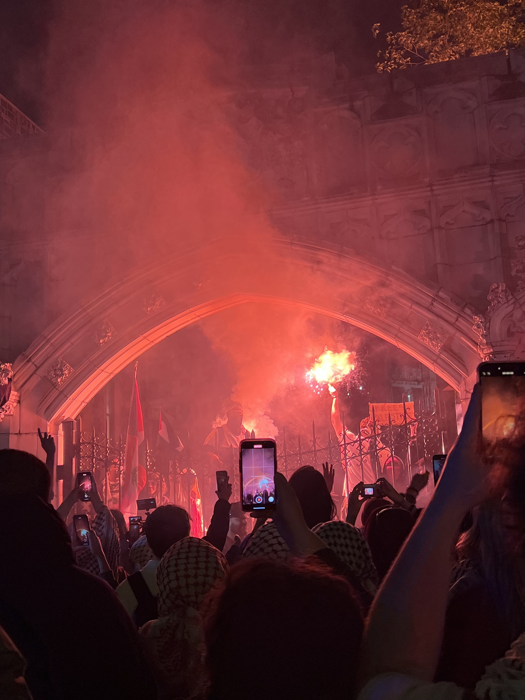
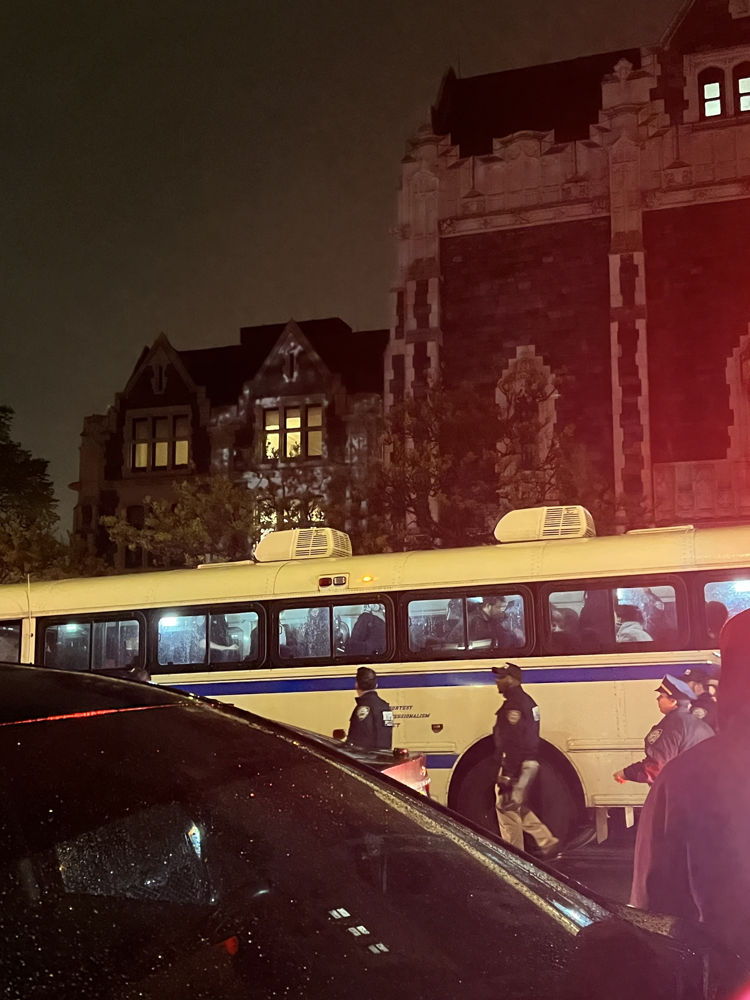

A View From Outside: The Last Night of the CUNY Gaza Solidarity Encampment
A breakdown of the events outside City College, where the police harassed and arrested protestors who had come in solidarity with the CUNY encampment



